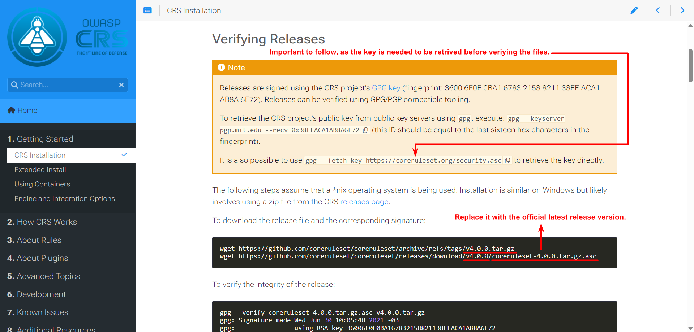

Setting Up ModSecurity Core Rule Set (CRS)
The OWASP ModSecurity Core Rule Set (CRS) is a collection of generic attack detection rules designed to protect web applications from a wide range of common vulnerabilities, including SQL Injection, Cross-Site Scripting (XSS), Local File Inclusion (LFI), Remote Code Execution (RCE), and protocol violations.
Once ModSecurity is successfully integrated with NGINX, the CRS provides the actual detection logic that enables the Web Application Firewall to identify and block malicious requests.
Downloading the OWASP CRS
Head over to the official OWASP Core Ruleset website. Next follow the Installation Documentation for installing the latest version of the core ruleset as it is already well-documented, which is why I am not repeating the same step here.
For a bit of a head start, see the following image.
{kind=link}
Follow until Installing the Rule Set section in that link. and continue here from the next section.
Tip
Always go for the official latest release version of OWASP ModSecurity Core Rule Set (CRS).
Installing the Core Rule Set
Before installing the CRS, it is always a good practice to reorganize. We are going to install the CRS into the /usr/local/modsecurity, since the CRS
is already a part of ModSecurity itself. To do so,
mkdir /usr/local/modsecurity/modsecurity-crs
Then to install the CRS,
tar -xzvf /path/to/<version>.tar.gz --strip-components 1 -C /usr/local/modsecurity/modsecurity-crs
Replace <version>.tar.gz with (e.g. v4.21.0.tar.gz) file that you downloaded following the Installation Documentation.
Everything related to OWASP ModSecurity CRS will be now available at /usr/local/modsecurity/modsecurity-crs
Preparing the CRS Configuration
The CRS ships with example configuration files that must be renamed before use.
Navigate /usr/local/modsecurity/modsecurity-crs to Copy the example setup file,
cp crs-setup.conf.example crs-setup.conf
This file contains global CRS configuration options such as anomaly scoring, paranoia levels, and rule exclusions.
You may optionally review or customize this file later, but the default configuration is sufficient for initial deployment.
Configuring ModSecurity to Load CRS
Edit the main ModSecurity configuration file,
vim /usr/local/modsecurity/modsecurity.conf
Ensure the following lines are present:
Include /usr/local/modsecurity/modsecurity-crs/crs-setup.conf
Include /usr/local/modsecurity/modsecurity-crs/rules/*.conf
These directives instruct ModSecurity to load the CRS configuration and rule sets during startup.
Enabling Optional Rules
In the /usr/local/modsecurity/modsecurity-crs/rules/ directory there two rules are disabled by default. They are as follows,
REQUEST-900-EXCLUSION-RULES-BEFORE-CRS.conf.example
RESPONSE-999-EXCLUSION-RULES-AFTER-CRS.conf.example
You can enable them by too by renaming them.
mv /usr/local/modsecurity/modsecurity-crs/rules/REQUEST-900-EXCLUSION-RULES-BEFORE-CRS.conf.example /usr/local/modsecurity/modsecurity-crs/rules/REQUEST-900-EXCLUSION-RULES-BEFORE-CRS.conf
mv /usr/local/modsecurity/modsecurity-crs/rules/RESPONSE-999-EXCLUSION-RULES-AFTER-CRS.conf.example /usr/local/modsecurity/modsecurity-crs/rules/RESPONSE-999-EXCLUSION-RULES-AFTER-CRS.conf
Now the above two rules are also included and activated.
Verifying CRS Integration
After configuration, reload NGINX to apply the changes:
nginx -t
systemctl reload nginx
If no errors are reported, the CRS has been successfully integrated.
At this stage, ModSecurity is fully functional and actively inspecting HTTP traffic using the OWASP Core Rule Set.
Testing Modsecurity
A simple way to trigger ModSecurity is by simulating a common web attack, such as SQL Injection, Path Traversal, File Access Attempt, RCE.
Attempting all these web attacks should return an http status code of 403 (Forbidden).
SQL Injection Test
curl "http://<target-host>/?id=1' OR '1'='1"
This request is designed to match OWASP CRS SQL Injection detection rules and should result in a ModSecurity audit log entry.
Path Traversal Test
curl "http://<target-host>/?id=../../../etc"
../../../etc
This request is designed to match OWASP CRS Path Traversal detection rules and should result in a ModSecurity audit log entry.
File Access Attempt Test
curl "http://<target-host>/?id=....//....//....//etc/passwd"
This request is designed to match OWASP CRS File Access Attempt detection rules and should result in a ModSecurity audit log entry.
RCE Test
curl "http://<target-host>/?exec=/bin/bash"
This request is designed to match OWASP CRS RCE detection rules and should result in a ModSecurity audit log entry.